伸展树和 B 树
本文继续介绍两种搜索树。
伸展树
伸展树（Splay Tree），也叫分裂树，是一种二叉搜索树，满足对连续的 M 个树操作（包括插入、删除和查找），所用的时间为 $O(MlogN)$。
相对于 AVL 树和红黑树，伸展树的实现更为简捷。伸展树无需时刻都严格地保持全树的平衡，但却能够在任何足够长的真实操作序列中，保持分摊意义上的高效率。伸展树也不需要为结点增加颜色或其他域，更不需要记录平衡因子或高度之类的额外信息，故适用范围更广。
伸展树的实现原理
通常在任意数据结构的生命期内，执行不同操作的概率往往极不均衡，而且各操作之间具有极强的相关性，并在整体上多呈现出极强的规律性。其中最为典型的，就是所谓的“数据局部性”(Data Locality)，这包括两个方面的含义:
刚刚被访问过的元素，极有可能在不久之后再次被访问到
将被访问的下一元素，极有可能就处于不久之前被访问过的某个元素的附近
因此，伸展树的策略是：当某个结点被访问到后（无论是插入、删除还是查找，都会访问某个结点），将通过一系列的 AVL 旋转将之移动到根结点处。
伸展树的伸展
伸展操作是伸展树的核心，指把某个访问的结点通过一系列的旋转操作，将其移动到根节点的操作。
记操作处理的结点为 x，其父结点为 p，祖父结点为 g。如果 x 为 root，结束；p 为 root，旋转交换 x 和 p；否则按照 x、p、g 的相对位置，不断进行 AVL 旋转，直到 x 变成树根即可。
具体的旋转方式见下图：
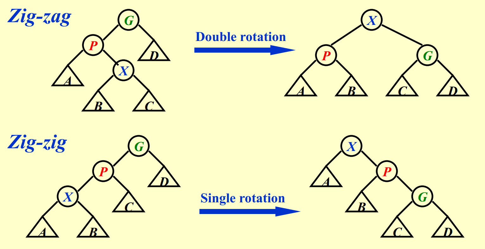
其中 Double rotation 为先对 p 左旋，再对 g 右旋；Single rotation 则是先对 g 右旋，使得 p 成为根结点（对该子树，下同），然后再对 p 右旋，使得 x 成为根结点，如果 x 还未成为整棵树的根节点，重复操作即可。
伸展树的插入
记插入的结点为 x，首先按照普通二叉搜索树的插入方式，把 x 插入到树中，之后调用伸展操作，把 x 移动到树根。
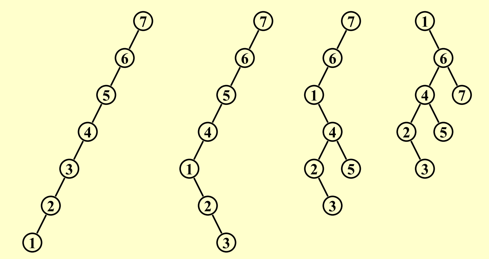
具体插入过程如上图：显然由图可知，对 1 作 3 次 Zig-zig 旋转即可。
伸展树的查找
查找与插入完全相同，找到结点后，调用伸展操作即可。
伸展树的删除
- 找到待删除结点 x。（此时由查找算法，知 x 将变为根）
- 删除 x。此时只剩下左子树 $T_L$ 和右子树 $T_R$。
- 调用
findMax()或findMin()算法，找到 x 的前驱（后继），这里以前驱为例（即调用findMax()），记该前驱为 $T_Lmax$，此时 $T_Lmax$ 会成为 $T_L$ 的根，且 $T_L$ 没有右儿子（否则这个右儿子会比根结点大，而 $T_Lmax$ 已经是左子树中的最大元素，显然矛盾），这时只要让 $T_L$ 的右儿子变成 $T_R$ 即可 。
B 树
B 树的定义
B 树，又称多路平衡查找树，因其多路的特性，通常比红黑树高度低，由于磁盘读写的效率是比较低的，因此树高较低有利于提高磁盘读写的效率，B 树及其变种 B+ 树（B+ 树会比 B 树更加常用）通常用于数据库和操作系统的文件系统中。B 树和 B+ 树中所有结点的孩子结点数的最大值称为阶。
一棵 m 阶 B 树或为空树，或为满足如下特性的 m 叉树：
-
树中每个结点至多有 $m$ 棵子树。
-
若根结点不是终端结点，则至少有两棵子树。
-
除根结点外的所有非叶结点至少有 $\lceil m/2\rceil$ 棵子树（注意，这里是向上取整（不是高斯函数），下同）。
-
非叶结点的结构：
| $n$ | $P_0$ | $K_1$ | $P_1$ | $K_2$ | $P_2$ | $\cdots$ | $K_n$ | $P_n$ |
|---|
其中 n 为结点关键字的个数，$K_i$ 为结点的关键字，$K_1<K_2<\dots <K_n$，$P_i$ 为子树根结点的指针；$P_{i-1}$ 所指子树的关键字均小于 $K_i$，$P_i$ 所指子树的关键字均大于 $K_i$。
- 所有的叶结点都出现在同一层次上，且不带任何信息。（类似于红黑树的 NIL 结点）
注：2 中，我们将 B 树非叶子结点的最后一层称为终端结点，其他结点称为非终端结点。
由上面五条特性，我们可以发现，B 树是一棵完美的平衡树，每个结点的平衡因子都是 0。此外，每个结点的关键字数目都比其孩子结点数目少 1。
B 树的高度
若高度最小，显然是每个结点都有 m-1 个关键字，而由于 B 树是完全平衡的，因此第 i 层有 $m^{i-1}$ 个结点，因此我们得到 $n\le (m-1)(1+m+m^2+\dots +m^{h-1})=m^h-1$，因此有 $h\ge log_m(n+1)$。
若高度最大，对于一棵有 n 个结点的 B 树，其叶子节点就有 n+1 个（因为如果把 B 树所有结点的关键字都放在数轴上，将把数轴划分为 n+1 个区间，而叶子结点如果存有数据，这些数据一定会恰好分布在这些区间中，故有 n+1 个叶子结点），因为根结点至少有两棵子树，因此第二层至少有两个结点，之后假定每个非叶结点都有 $\lceil m/2\rceil$ 棵子树，因此叶子结点一层将会有 $2(\lceil m/2\rceil^{h-1})$ 个结点（因为叶子在第 h+1 层），故有 $n+1\ge 2(\lceil m/2\rceil^{h-1})$。显然有 $h=O(\log n)$。
B 树的插入
下面以一棵 4 阶 B 树为例，4 阶 B 树又称为 2-3-4 树，因为树中只可能有 3 种结点：2 结点、3 结点和 4 结点。
2 结点：包含 1 个关键字的结点，有 2 个子结点；
3 结点：包含 2 个关键字的结点，有 3 个子结点；
4 结点：包含 3 个关键字的结点，有 4 个子结点；
B 树是从叶子向上生长的，插入应该先找到最后一层的合适位置（即插入到终端结点），之后把该元素并入结点中，最后再看其关键字的数目是否多于 m-1，如果多了，就要对插入后的结点进行分裂操作。
例如输入序列为 9、17、31、11、23、19、50、28。
输入 9，9 成为根（2 结点）。
输入 17，17 比 9 大，先寻求合并，变成 3 结点。
输入 31，31 比 17 大，仍然寻求合并，变成 4 结点。
此时如图：
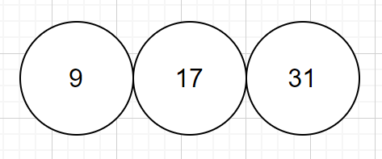
之后输入 11，寻求合并，如图：
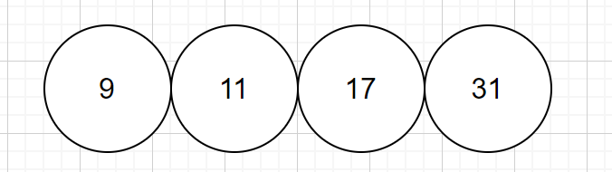
但此时该结点关键字个数为 4，已经超过了最大限制，因此此时 B 树会分裂，向上生长，（通常是分裂出第 $\lceil m/2\rceil$ 个结点，如这里分出第 2 个结点 11，而如果是 5 阶 B 树，则分出第 3 个结点。分裂后如下图：
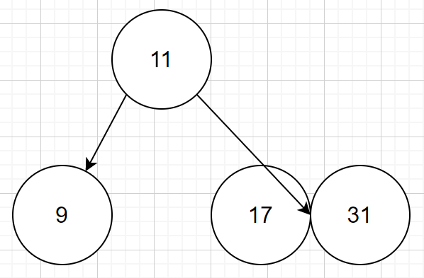
类似的，输入到 19 时又会发生分裂，而向上分裂的 19 又会寻求合并，与 11 并成一个 3 结点（如果依然超过，还要继续向上分裂），如图：
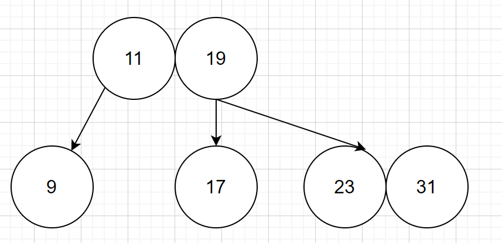
依次类推，该树最终的形状应该如下：
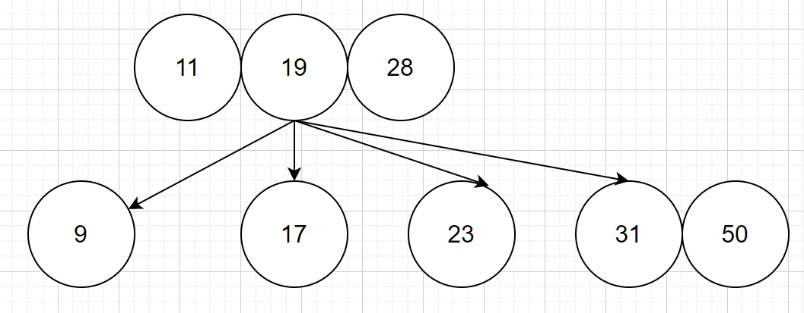
注：2-3-4 树其实和红黑树是等价的，但是由于 B 树在 C 语言中表示起来不如二叉树方便，因此便有了红黑树，其等价关系为：
2 结点 $\Leftrightarrow$ 一个黑色结点
3 结点 $\Leftrightarrow$ 一个红色结点和一个黑色结点（上黑下红），存在两种形式（左倾和右倾）
4 结点 $\Leftrightarrow$ 中间一个黑色结点在上，下面两个红色结点
示意图如下：
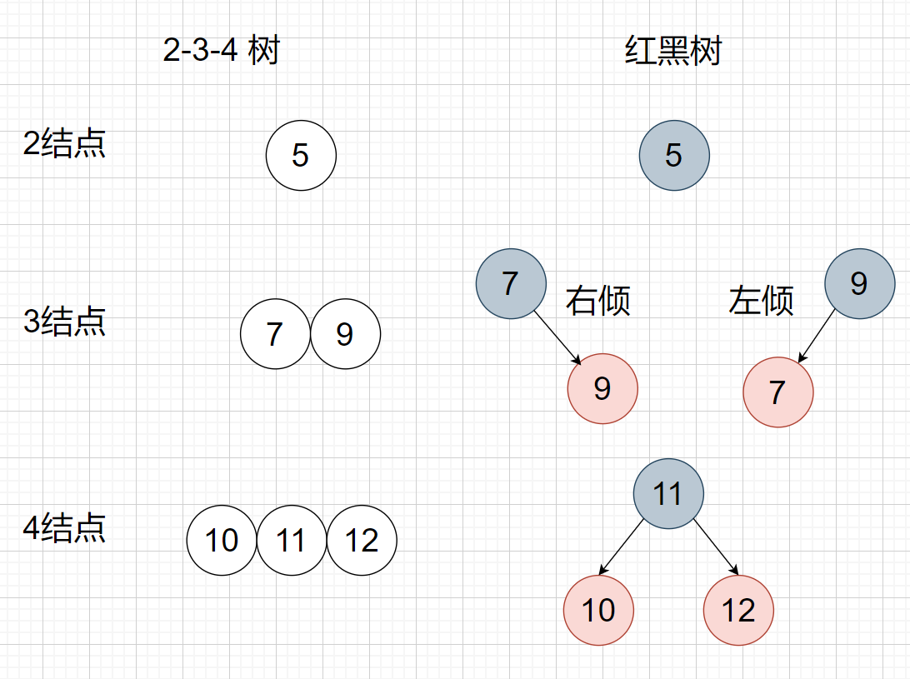
因此，上面的 B 树如果修改为红黑树，如下：
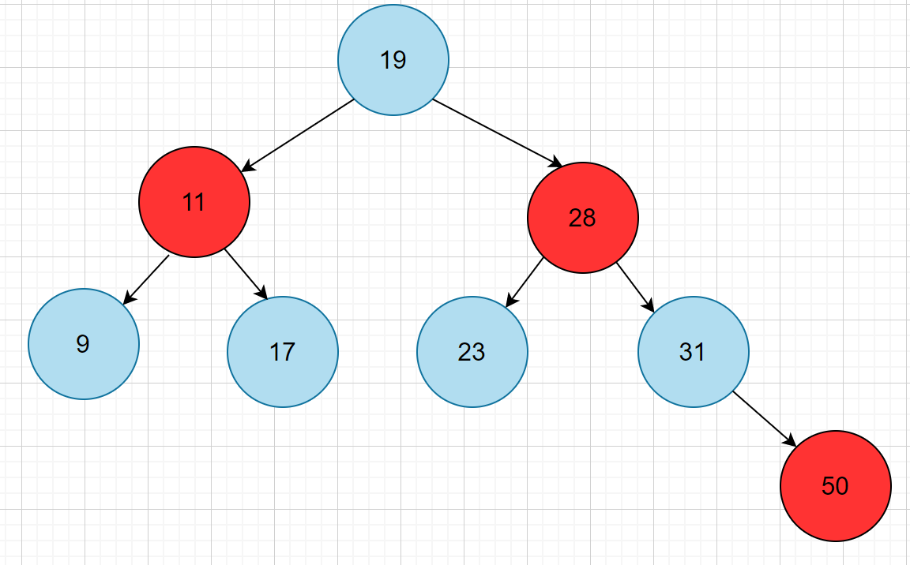
显然，由于 3 结点的对应方式不同，因此一棵 B 树可以对应多棵红黑树，但一棵红黑树只能唯一对应一棵 B 树。
B 树的删除
依然以 2-3-4 树为例，首先找到该元素，方式与二叉搜索树无异。
删除结点为终端结点
-
若删除后，该结点的关键字数目大于 $\lceil m/2\rceil-1$，删除后仍满足 B 树定义，可以直接删除。
-
删除后不满足 B 树定义，此时需要借来结点以补充。
2.1 兄弟够借，即左/右兄弟结点的关键字数目大于 $\lceil m/2\rceil-1$，可以借一个兄弟的关键字，并调整父结点的关键字，如图：
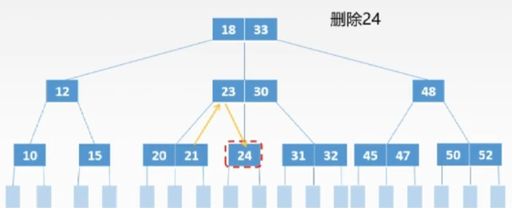
要删除 24，此时左边兄弟够借，可以把父亲中 24 的前驱 23 放到 24 处替代，再把左边兄弟中最大的放到原来父亲中的位置，如果向右边借也是同理。
2.2 兄弟不够借，此时我们让该结点和不够借的兄弟（选一个）以及父结点中位于该结点和兄弟之间的元素三个结点合并成一个新结点，再删除新结点中的关键字，如图：
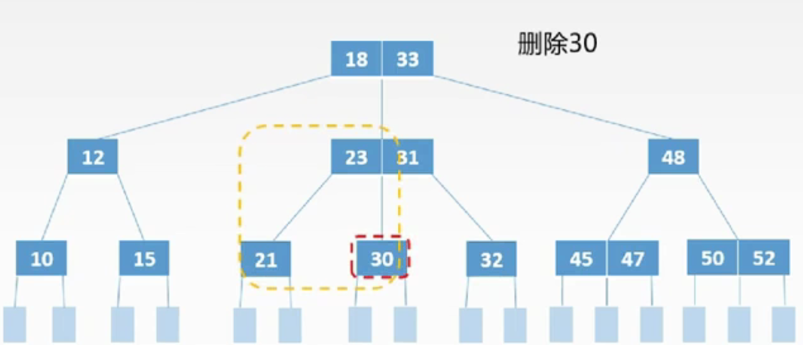
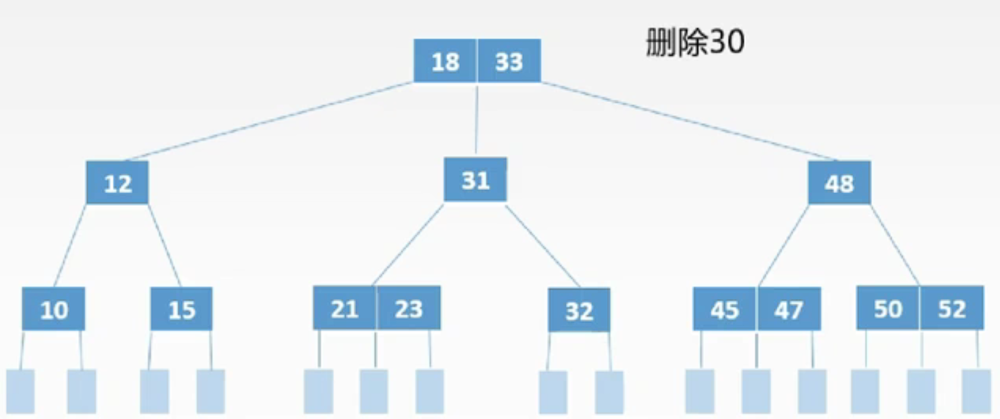
如果删除后，其父亲结点依然不满足 B 树定义，需要继续按同样的方式进行调整（2.1 或 2.2）。
删除结点为非终端结点
只要按普通删除的操作，将之转化为终端结点即可，但是这里为了满足 B 树的条件，需要对左右子树进行判断：
-
若小于 k 的子树中关键字个数 $>\lceil m/2\rceil-1$ 则找出 k 的前驱 k’ 代替 k，例如删除 33。
-
若大于 k 的子树中关键字个数 $>\lceil m/2\rceil-1$ 则找出 k 的后继 k’ 代替 k，例如删除 18。
-
若前后两子树关键字个数均为 $\lceil m/2\rceil-1$ 则直接合并这两个子结点，然后删除 k 即可，例如下图中删除 23。
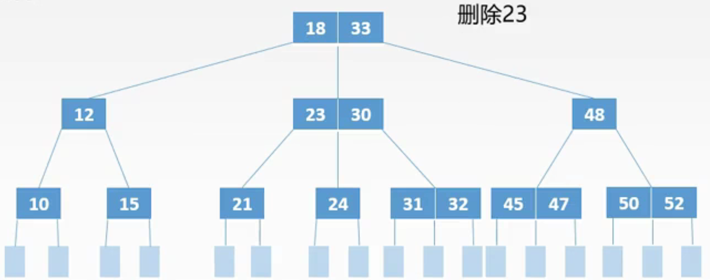
得到
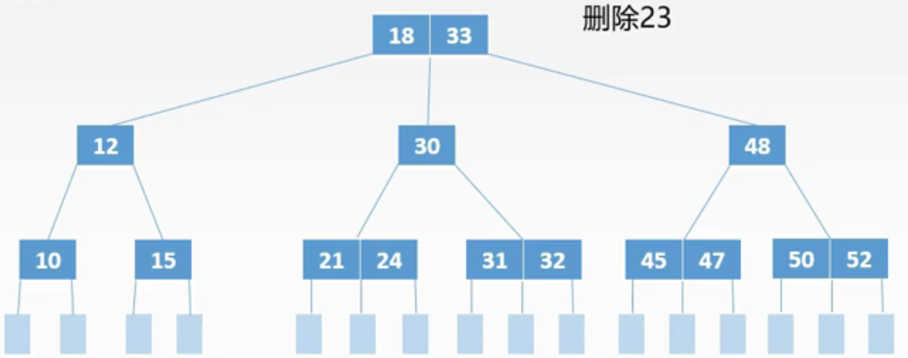
B+ 树
B+ 树是 B 树的变形，有两种类型的 B+ 树，一种是对于 $m$ 阶 B 树，其存放 $n$ 个关键字的结点，子节点数为 $n(n\le m)$，另一种子节点数为 $n+1$。其中 MySQL 数据库采用的是第一种 B+ 树，这里介绍第一种 B+ 树。
一棵 $m$ 阶 B+ 树满足如下要求：
-
每个分支结点至多有 $m$ 棵子树。
-
根节点或者没有子树，或者至少有两棵子树。
-
除根节点外，其他每个分支结点至少有 $\lceil m/2\rceil$ 棵子树。
-
有 $n$ 棵子树的结点恰好有 $n$ 个关键字。
-
所有非叶子结点不保存关键字记录的指针，只进行数据索引，且仅包含各个子结点中的最小关键字以及指向子结点的指针（有的 B+ 树储存最大关键字，都一样）
-
所有叶子节点包含全部关键字，以及指向相应记录的指针，而且叶子结点按关键字大小顺序链接（构成一个有序链表）。
注：这里称 B 树中的终端结点为叶子节点，非终端结点为非叶子结点，即叶子节点存储内容，下同）。
显然前 3 条性质与 B 树相同，不同的是，关键字树和路数相等，此外其非叶子结点不保存关键字记录，这两个性质都使得 B+ 树的非叶子结点能够保存更多的关键字，高度也比 B 树更小。
同时，由于 B+ 树的叶子结点高度一定，同时所有实际的数据（关键字记录）都存储在叶子结点，因此其查询性能稳定。
此外 B+ 树扫库和扫表能力更强。如果我们要根据索引去进行数据表的扫描，对 B 树进行扫描，需要把整棵树遍历一遍，而 B+ 树只需要遍历所有叶子节点即可。
下面是一棵 B+ 树：
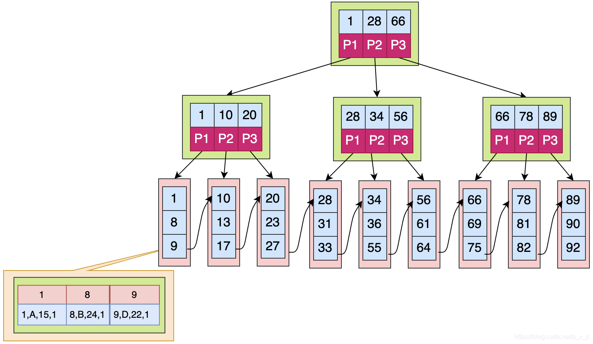
B+ 树的插入、查找和删除都和 B 树是类似的，这里不再赘述。